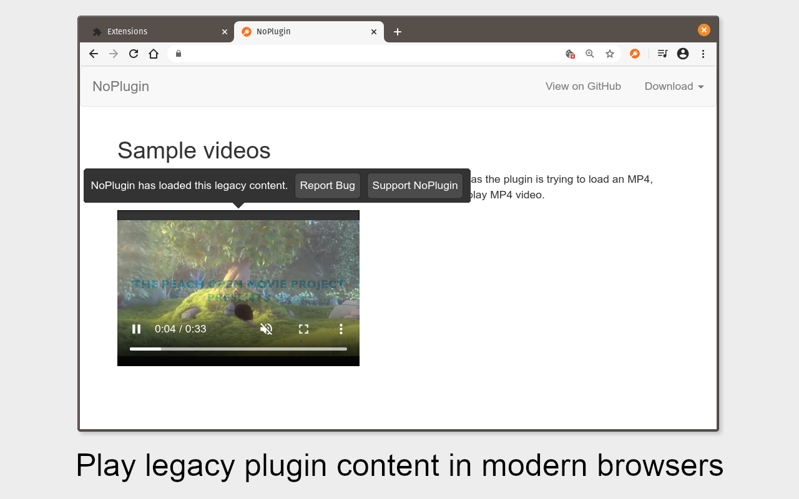

I released the first version of QuickChrome in early 2016, as a browser extension that replaced old QuickTime media embedded players in webpages with a modern HTML5 player. It was a convenient way (when it worked) to interact with old websites without using an old and insecure web browser. I have released 19 updates since then, and the extension has a combined total of ~27,000 active users across Chrome and Firefox under its current name of NoPlugin.
NoPlugin is one of the most complex software projects I’ve ever worked on. It supports replacing embeds for Windows Media Player, QuickTime, Adobe Flash, and others, some of which can be played natively in the browser, and for the rest it downloads the content to your PC for playback with VLC or another application. NoPlugin even supports parsing media playlists, replacing legacy YouTube and Vimeo embedded players with their modern equivelents, and even a “compatibility mode” that tricks the page into displaying Flash content.

However, NoPlugin is also a lot of work to maintain, and it has also received a steady stream of negative reviews for edge cases where it’s not helpful. Also, NoPlugin will likely need some time-intensive rewrites for Google’s new Manifest V3 requirements, which will be enforced in the near future. Because of all that, I’m ending development on NoPlugin.
NoPlugin 7.1, which I’m working on as I write this, will contain a few bug fixes and the removal of all Google Analytics code. That will likely be the last NoPlugin update from me. NoPlugin should continue to work as-is until all browsers start enforcing Manifest V3 requirements.
If any browser extension developers are interested in continuing development of NoPlugin, I’m happy to help make that happen. If that’s you, send me an email at me@corbin.io.